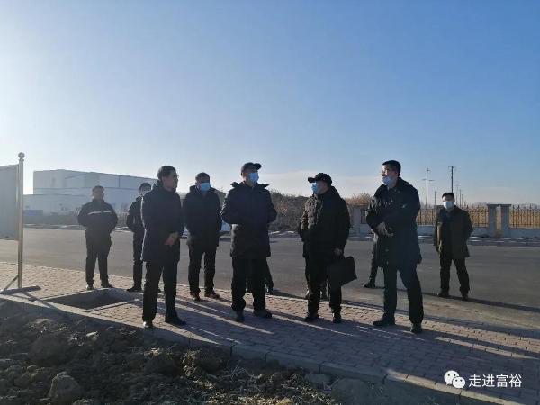

 省人大常委会副主任、市委书记孙珅一行深入我县就主导产业、文化产业、基层党建、村“两委”班子建设开展调研。县委副书记、县长董加成，县政协主席龚建民，县委副书记司波，县委常委、纪委书记冯立军，县委常委、县委办主任王晓峰，副县长潘锐以及市直相关部门领导参加调研活动。 孙珅一行先后深入益海嘉里富裕现代产业园、医药产业园、龙安桥兴裕村、城南食品园区、三家子满族村，通过实地踏察、现场观摩、听取汇报、现场交流、观看汇报片等形式，对我县各项工作进行全面调研。孙珅对我县经济社会发展以及各项工作所取得的成绩给予充分肯定。他希望富裕县在招引大项目，推进产业发展工作中再加一把劲，一鼓作气把医药产业园规划建设好，当好全市排头兵。 孙珅一行实地察看了益海嘉里项目建设的整体情况，看到尽管是严寒季节，项目建设仍然如火如荼地进行，孙珅给予了充分肯定，他指出富裕一班人在推进招引大项目上取得瞩目的成绩，成绩来之不易，益海嘉里项目如期推进，引领了全市招引大项目的信心，给全市树立了标杆，其带的来综合效应已经初步显现，希望富裕再接再厉，推进各项工作的开展。当他了解到，我县正在全力推进百亿级医药产业园建设工作，并取得了初步成效，孙珅指出，富裕在招引大项目上有了自己成型的做法，很有成效，要加快项目的招引，让项目尽快落地，引领全市。 在裕腾乳业调研时，孙珅强调，乳业是富裕立县主导产业之一，近年来富裕在寻求新的突破点上做了一些工作，也取得了一些成效，下步要请专业团队用专业角度谋划，进一步明晰产品和市场，推进各项工作开展。 在龙安桥镇兴裕村、友谊乡勤联村调研时，孙珅一行详细了解了村两委班子建设，基层党建推进，村级债务化解等工作。孙珅强调，脱贫攻坚工作只是乡村振兴的基础，要在脱贫后，在群众收入增加上下功夫，要利用好已经建设好的文化场所，要充分利用好，宣传好。进一步改善农村的环境改善，带领群众干好事业，培养好年轻有为的村两委班子，敢于尝试地推进各项工作的开展。 三家子村被誉为满语的“活化石”，孙珅十分关心满族文化的传承发展。他先后来到村博物馆、村小学、满语传承所，看望这里的满族群众，与他们共同研究满语文化传承发展工工作。 调研时，孙珅指出市委、市政府以及富裕县委县政府要立即成立专班人员，推进相关工作，各级各部门要进一步提高站位，增强历史责任感，进一步挖掘传承满语文化，充分借助满语的特殊性，发展旅游事业。宣传部门要成立专门的考核推进小组，加强传承发展工作。要在三家子村营造更好的满语环境进一步做好满语的传承和发展。 调研时，孙珅还就人才招引，促进人口增长等方面提出了具体要求。